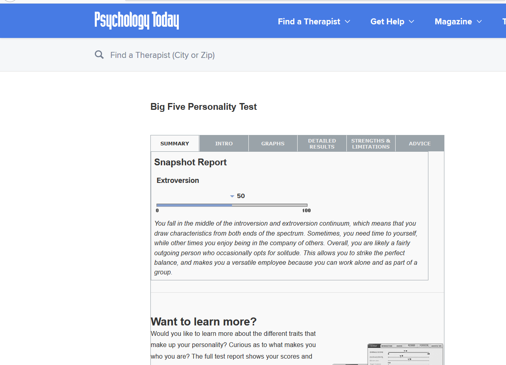
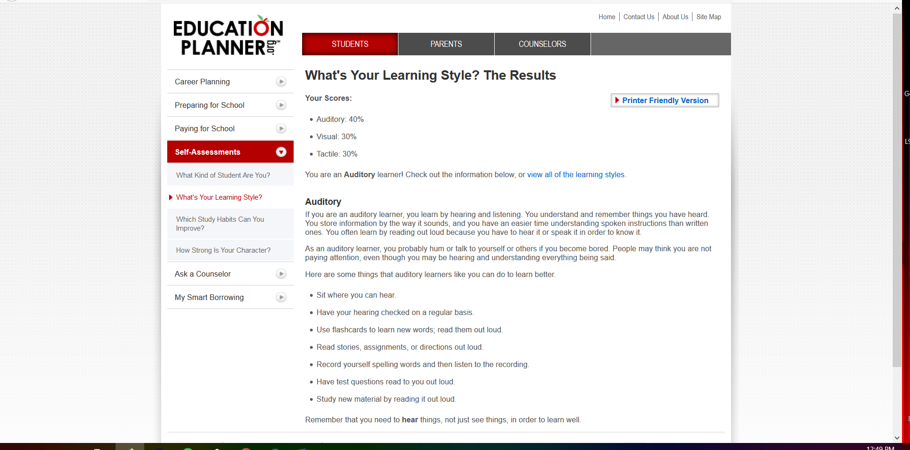
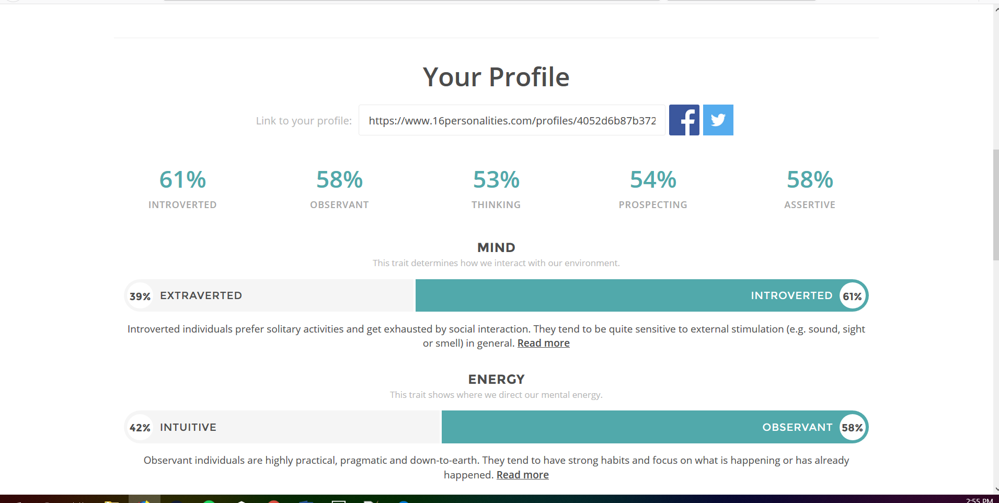
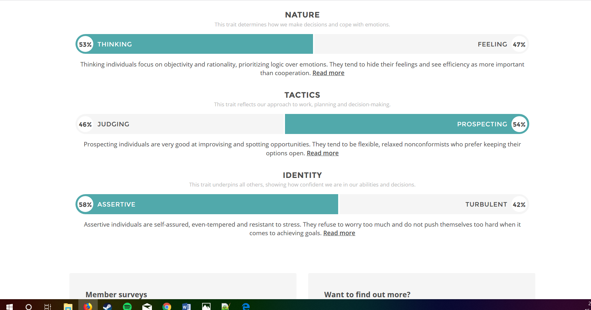

My name is Dominik Bush and I’m a 33-year-old from Northern NSW, Australia. My education is a bit of a mixed bag, I finished my HSC in 2005 and went on to do a landscaping apprenticeship. After deciding landscaping wasn’t for me I decided to start working in the education industry but more
specifically with special needs children. I worked as a teacher’s aide for 3 years and absolutely loved it. In 2013 my girlfriend convinced me to take a bunch of online course (TEFL, CLIL, TESOL) and go to China to teach English to Chinese children, this has basically been my career since,
I’ve worked in China for a total of 3 years and have also been teaching English online while travelling the world. In 2016 my son was born and since then we have continued to travel and teach online from different places around the world including Thailand, Vietnam and China. In my spare time
I like to hang out with my son, go to the gym, play sports (soccer, touch football, volleyball, rugby league, cricket… pretty much all sports) and I also love gaming way more than I should (I don’t want to even know how much time I’ve spent on WoW and Diablo). A fact that some people may find interesting about me is that I got a full sleeve Diablo themed tattoo in China that took a total of 65 hours from a lady who didn’t speak a word of English.

My interest in IT started at a fairly early age. I’ve always loved using computers and gaming and working as an online teacher/lesson planner I spend a lot of my time on computers. In recent years I’ve become a lot more interested in what goes on behind the scenes in the IT industry. I love improving my knowledge of programs and their functions such as excel, bots, Classin and a bunch of others.
My decision to study with RMIT was actually quite a hasty one, although the idea of studying IT had been something I’d thought about before, I’d never really made that commitment to actually start. This year my partner started her Psychology degree and I thought this is probably the perfect time for me to get my hands dirty and start studying too. I was doing some research on courses and got a from OUA to give me some more information and before I knew it I was signed up and ready to go. It’s going to be an interesting couple of years between juggling work, family and commitments but I’m super excited to get stuck in.
During my studies with RMIT I expect that I will learn a lot of the basics about IT and hopefully by the end I’ll have a good idea about what part of the IT industry I could see myself working in. Already in the first couple of weeks I’ve found that the work, although sometimes challenging, has been really interesting and I’m really enjoying it so far. I hope that by the end of the course I’ll be confident in all the fundamental basics of IT.
The ideal job for me is something that I’m not 100% sure of just yet but I definitely have interests in certain categories. If I was to choose one job right now that I think, I’d love to do long term I thing I would go for something like this;
https://careers.blizzard.com/en-us/openings/oTnw9fwF
This jobs posting is for a Software Engineer working on core systems within Blizzard games and more specifically restoring old games and bringing them to life on newer systems. This position really appeals to me as I’m enjoying learning more about programming and how it works and also on a personal level, I’ve always been passionate about gaming and would love to get in to the world of game design. This position requires fluency in C++ and C#, ability to work with unfamiliar source, strong critical thinking and problem solving skills and great communication skills.
My currently skills in C++ and C# and working with code in general are vastly inadequate for a position like this, I would definitely need to spend a lot more time improving my coding skills. As for the critical thinking and communication sides of the requirements, I think I am quite good at both these aspects, I could always improve but I think I have a good base of experience and knowledge in these fields.
I think the biggest thing I could do to try to improve my skills enough for a position like this would be to finish my IT degree and also branch out into some more complex programing courses at some point. Other than that, I think that self-teaching is a huge asset these days. We have access to so much information at our fingertips, a simple Google search or Youtube video can teach us so much.




I think the results of my personality tests show that I am in the middle of the spectrum. I can often feel uncomfortable around a group of people at first but I become fairly confident in a quick span of time. Although I often try to avoid group outings, once I convince myself to engage in group activities I usually make the most of it and have a lot of fun. I think these results show that I need to try to overcome the initial awkwardness I feel when in a group environment and try to be more outgoing early on.
Poor physical health is a huge problem in current society, people are less active and are eating foods that are worse for us. In 2016 over 39% of the world’s population was classified as overweight and the numbers are continuing to climb. I intend to create a smartphone app that encourages users to become more active in their day to day life, track energy intake, expenditure and promoting healthy habits. The app will then reward users based on their weekly performance.
Finding motivation for keeping yourself physically fit can at times be difficult and feel nearly impossible. I’ve spent a great deal of my time over the past 10 years in the gym and I’ve seen a huge amount of people come and go. I have family members who are battling being overweight but just can’t find the motivation to stick to a routine for a long period of time. This issue has often been a problem amongst people who are trying to lead a healthy lifestyle and my inspiration for a reward based app actually came from an unlikely source.
My partner and I had been saving for a holiday when we found an app called Raiz. This app has a lot of functions but the ones we found most useful were the “round up” and “invest” features. The basic idea is that you link your bank card to the app and whenever you make a purchase it rounds up to the nearest dollar and stores that money in the app (which can be taken out at any time by the user). So you’re probably wondering what that has to do with fitness? Well, I thought to myself, what if I took the basic principal of investing small amounts of your own money into an app that then rewards you for reaching fitness goals.
The fitness app will aim to provide a range of fitness tracking data, energy intake/expenditure calculations, access to detailed gym routines based on your goals, healthy recipe ideas and a reward system. Having access to all of these amazing fitness tools in one centralised app will make improving your physical health easier than ever before.
Fitness tracking – The fitness app will provide a platform for the user to easily track their workout sessions and goals. As you work your way through a defined workout period, whether it be a month or a year, you will be able to work toward your set goals and earn rewards based on your performance.
Energy intake/expenditure – First calculations will be made based on your weight/height/age and target weight. These factors will be calculated based on the period in which you want to lose the weight over, and a daily energy intake will be presented to the user. If the user can stick to their goals and not exceed the recommended daily energy intake they will be rewarded via the apps reward system.
Access to detailed gym routines – It’s one thing to have a plan to lose weight and get healthy but for someone who has never had much to do with fitness it can often be hard to know where to start. The fitness app will provide detailed gym routines based on your overall health, experience level, goals and what you enjoy. Based on your choices the fitness app will come up with a customised routine that meets your needs. Hit all your weekly fitness goals and be rewarded.
Healthy recipe ideas – Dieting and watching your energy intake can be incredibly boring and hard to stick to. As someone who has had meal plans on and off for the last 5 years I know that having a range of tasty, interesting meals can be the difference between sticking to a meal plan or quitting and going back to your old ways. There is a huge range of healthy recipes out there but it can be extremely time consuming and frustrating trying to find the right one for you. The fitness app will offer a range of healthy recipes at the touch of a finger. Input your energy intake goals and the recipe will update in real time to show you how much of each ingredient YOU need. This can be extremely important as a 100kg male who is training for strength will have a vastly higher daily energy intake limit than a 60kg woman training for weight loss.
Reward system – The final and possibly most important aspect of the app is the reward system. We’ve all seen those apps that track money saved from quitting cigarettes but where does that money go? Do you notice the extra money in your pocket or do you just spend it elsewhere? The fitness app will connect to your bank card and round up each purchase to the nearest dollar. It will then take that extra money and store it within the app, unlocking as you hit your fitness goals. Let’s look at a quick example. You buy a cup of coffee using your bank card for $4.50. The fitness app will take an additional 50c on top of that purchase (making the entire purchase $5) and put the extra 50c into your fitness app. Hit your fitness goals and you will have access to that 50c you saved at a later date. Doesn’t sound like much right? In 1 month of using a savings app that works on similar principles I was able to save $89 without even noticing I was putting it aside!
There are other potential applications for the reward system that could potentially be looked in to, investing the money into low risk stocks to increase yield over time, small penalties for not hitting goals which in turn can be used to increase rewards of users who are hitting goals. There really is a huge amount of options for the reward system.
An app on a large scale such as this will require a range of tools to complete. An app development software such as Appery.io would provide a cloud based app builder that can be used to create both android and iOS apps and is able to be worked on by teams. Contact with other app development teams who provide apps which would service one section of the fitness app (such as energy intake counters) would greatly reduce time needed to finish all components of the app.
This app will require a range of different skills to be completed. Experience in mobile app development for both Android and iOS would be greatly beneficial. Ability to source content from other locations (such as websites and other apps) will help to bring all the different components of this app together. Being able to work well in a group, as with any project, will ensure that combining all the pieces to the final product will be as smooth and seamless as possible.
If the app is successful it will provide a user friendly experience that combines all the essential components of living a healthy lifestyle in one central location and help people to recognise that being healthy doesn’t have to be a dull, time consuming experience, it can be interactive and fun. The fitness app will also help people who have trouble saving money (like myself) to put money aside for an upcoming vacation, wedding or something they’ve always wanted to buy themselves. Combining personal well-being with financial rewards sounds like a win-win to me.